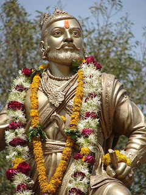

The name Maharashtra is believed to be originated from rathi, which means chariot driver. Maharashtra entered the recorded history in the 2nd century BC, with the construction of its first Buddhist caves. The name, Maharashtra first appeared in a 7th century in the account of a contemporary Chinese traveler, Huan Tsang. According to the recorded History, the first Hindu King ruled the state during 6th century, based in Badami.
Shivaji Bhosle, the founder of the Maratha Empire, did a lifelong struggle against the Mughals. By 1680, the year of Shivaji's death, nearly the whole of Deccan belonged to his empire. Shivaji was a great warrior and one of the finest rulers of India, so he holds the highest place in Maratha history.
Sambhaji succeeded Shivaji, but he is not great as his father Shivaji. 1680 to 1707 is known as the period of instability in the history of Maharashtra. Balaji Vishwanath (1712-1721), Bajirao Peshwa (1721-1740), Nanasaheb Peshwa (1740-1761), 'Thorale' Madhaorao Peshwa (1761-1772, Narayanrao Peshwa (1772-1773), 'Sawai' Madhaorao Peshwa (1774-1795) and 'Second' Bajirao Peshwa - 1795 to 1802 were the other important rulers of Maharashtra.
The fall of Ahmednagar fort in 1803 marked the end of Indian rule and supremacy of British in Deccan. In 1804, General Wellesly proclaimed the Deccan in a state of chaos, established military rule and the Peshwas remained rulers for namesake.
The present state was formed in 1960 with Bombay as the capital, when the Marathi and Gujarati linguistic areas of former Bombay state were separated. Maharashtra became the main channel of cultural exchange between southern to northern India.